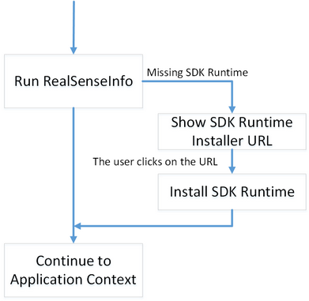

The RealSenseInfo JavaScript provides basic platform checks. It is used to check if the platform is ready to run any SDK browser application.

Figure 70: First Installation Sequence
Figure 70 shows the steps to run any SDK browser applications on a clean system:
| • | Run the RealSenseInfo script, which reports if the platform is ready for the SDK browser application. |
| • | If the platform is not ready, the script returns a URL to the SDK runtime installer that you need to subsequently display to the user for download and installation. |
| • | The user clicks on the URL to install the SDK runtime. |
| • | The platform now supports the SDK browser application. You can continue onto the application context. |
Script Reference
You can find the script in $(RSSDK_DIR)/framework/JavaScript/common/realsenseinfo.js.
Syntax
|
function RealSenseInfo(components, callback); |
Parameters
|
components |
A list of SDK runtime components to be used by the application. For example, use ['face3d', 'hand'] if your application uses face and hand tracking.
|
||||||||||||||
|
callback |
The callback function that receives the platform information:
|
Example
Example 112 shows a typical application landing page. The landing page is divided into two sections: the service section shows any setup dialog while the player section displays the application content. The page invokes the RealSenseInfo function and shows the URL for first installation or updates in the service section as needed. If the platform is ready to run SDK features, the script proceeds to load the player section content in the LoadPlayer script (omitted in the example.)
<head> <script type="text/javascript" src='https://ajax.googleapis.com/ajax/libs/jquery/1.7.2/jquery.min.js'></script> <script type="text/javascript" src='realsenseinfo.js'></script>
<script type="text/javascript"> $(document).ready(function() { $("#service").show(); $("#player").hide(); $("#service").click(LoadService()); });
function LoadService() { $("#service").append("<p>Check platform features and software versions...</p>"); RealSenseInfo(['face3d', 'hand'], function(info) { if (info.IsReady == true) { $("#service").remove(); $("#player").show(); $("#player").click(LoadPlayer()); return; } else { if (info.IsPlatformSupported != true) { $("#service").append("<p>Intel<sup>®</sup> RealSense<sup>™</sup> 3D camera is not found.</p>"); } else if (info.IsBrowserSupported != true) { $("#service").append("<p>The websocket protocol is not supported. Please update your browser to continue</p>"); return; } else if (info.Updates.length > 0) { $("#service").append("<p>Please download and install the following update(s):</p><ul>"); for (i = 0; i < info.Updates.length; i++) { $("#service").append("<li>"+info.Updates[i].href+"</li>"); } $("#service").append("</ul>"); return; } } }); }
function LoadPlayer() { } </script> </head>
<body style= 'text-align: center; background-color: #000000'> <div id="service" style="color: #FFFFFF; font-size: medium; text-align: center;"></div> <div id="player" style="color: #FFFFFF; font-size: medium; text-align: center;"></div> </body> |
Example 112: The Application Landing Page Scripts